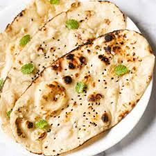

GARLIC NAAN

Description:
Garlic naan is a popular Indian flatbread infused with minced garlic and coriander, offering a flavorful twist to the traditional naan. It's typically enjoyed as a delicious accompaniment to curries or Indian dishes.
Ingredients:
- ½ cup warm water, or more as needed
- 1 teaspoon white sugar
- 1 (.25 ounce) package active dry yeast
- ¼ cup butter
- 2 cloves garlic, minced
- 2 cups bread flour, or more as needed
- ¼ cup plain yogurt
- 1 teaspoon kosher salt
Steps:
-
Combine water, sugar, and yeast in a bowl. Let stand until yeast softens and forms a creamy foam, about 15 minutes.
-
Heat butter in a pan over medium heat until melted and sizzling. Quickly mix in garlic and remove from the heat.
-
Add bread flour, yogurt, salt, and 1 tablespoon garlic butter to yeast mixture; stir with a wooden spoon until a shaggy dough forms. Knead by hand until dough pulls away from the sides of the bowl, adding more water or flour as needed. Turn dough out onto the counter and continue kneading until it forms a smooth ball, 3 to 4 minutes.
-
Place dough into a large bowl and drizzle a few spoons garlic butter over top. Cover and let rise until doubled in volume, about 2 hours.
-
Punch dough down and turn out onto the counter. Shape into a rough rectangle and cut into 6 pieces. Roll each piece into a ball and lightly dust with flour. Cover with plastic wrap and proof until slightly puffy, 15 to 20 minutes.
-
Preheat a cast iron skillet over medium heat until very hot, 5 to 10 minutes.
-
Preheat a cast iron skillet over medium heat until very hot, 5 to 10 minutes.
-
Working in batches, cook naan in the hot skillet until large bubbles form, 1 to 2 minutes. Flip, press gently, and continue to cook until bubbles on the bottom are charred, 2 to 3 minutes more.
-
Brush naan with more garlic butter before serving.